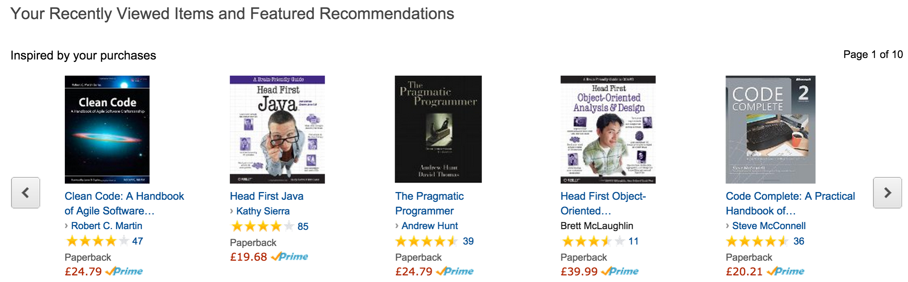

Many companies use recommender systems to suggest products, information, and friends to their customers . In this assignment you will develop a Movie recommender using existing movie data.
Many companies use recommender systems to suggest products, information, and friends to their customers . These systems analyse usage patterns to suggest what a user would prefer from among a collection of things he has never experienced. For example, fig.1 shows Amazon’s recommendations based on a user’s activity (e.g. other movies they’ve rated etc.).  Recommender systems are big business - recently Netflix ran an open competition for a recommender algorithm. The winners prize was $1 million. In this assignment, you will develop a similar recommender algorithm for Movies but, unfortunately, there's no cash prize involved.
The main aims of this assignment is to write a Java program that can:
You are provided with the following data adapted from MovieLens. You will need to examine the data files and read the README file to design and develop suitable abstract data types to represent the data in your Java program (hint: User, Movie and Rating classes). The Movie lens files are in CSV text format - you will have to write your own code that can parse the Movielens data. You will use the following two data sets; a large data set and a small data set. It might be more convenient to use the smaller data set in the early part of development, then move to the larger data set later on. small data set . large data set .
The following code example uses ADTs from Stanford University's standard library to read in a text file line by line, parse the data, and print the data to the standard output :
File usersFile = new File("data_movieLens/users5.dat");
In inUsers = new In(usersFile);
//each field is separated(delimited) by a '|'
String delims = "[|]";
while (!inUsers.isEmpty()) {
// get user and rating from data source
String userDetails = inUsers.readLine();
// parse user details string
String[] userTokens = userDetails.split(delims);
// output user data to console.
if (userTokens.length == 7) {
System.out.println("UserID: "+userTokens[0]+",First Name:"+
userTokens[1]+",Surname:" + userTokens[2]+",Age:"+
Integer.parseInt(userTokens[3])+",Gender:"+userTokens[4]+",Occupation:"+
userTokens[5]);
}else
{
throw new Exception("Invalid member length: "+userTokens.length);
}
}The above code produces output similar to the following:
UserID: 1, First Name:Leonard, Surname:Hernandez, Age:24, Gender:M, Occupation:technician UserID: 2, First Name:Melody, Surname:Roberson, Age:53, Gender:F, Occupation:other UserID: 3, First Name:Gregory, Surname:Newton, Age:23, Gender:M, Occupation:writer UserID: 4, First Name:Oliver, Surname:George, Age:24, Gender:M, Occupation:technician UserID: 5, First Name:Jenna, Surname:Parker, Age:33, Gender:F, Occupation:other
You will also need to use suitable data structures that will support the functionality of the program.
Develop a serializer that can serialize/deserialize all the data into a single file. You must use a well known external data format such as XML, JSON or both.
Develop a recommender api that provides at least the following interface description. The interface desciption is in the form methodName(parameter list). The parameter list includes required parameters - you can include more if you wish.
addUser(firstName,lastName,age,gender,occupation)
removeUser(userID)
addMovie(title, year, url)
addRating(userID, movieID, rating)
getMovie(movieID)
getUserRatings(userID)
getUserRecommendations(userID)
getTopTenMovies()
load()
write()Use the api to develop an end user application. This can be a simple command line interface that allows a user to access the functionality in the Recommender API(e.g. list movies, rate a movie, get movie details.) . One consideration here is to include a user login facility in the application.
The following are two possible approaches for implementing the recommendation function.
A simple approach would be to make almost the same prediction for every member. In this case the program would simply calculate the average rating for all the films in the database, sort the films by rating and then from that sorted list, suggest the top 5 films that the member hasn't already rated. With this simple approach, the only information unique to the member used by the prediction algorithm was whether or not the member had seen a film.
A better prediction about what a member might like by considering his actual ratings in the past and how these ratings compare to the ratings given by other customers. Consider how you decide on movie recommendations from friends. If a friend tells you about a number of movies that s(he) enjoyed and you also enjoyed them, then when your friend recommends another movie that you have never seen, you probably are willing to go see it. On the other hand, if you and a different friend always tend to disagree about movies, you are not likely to go to see a movie this friend recommends. A program can calculate how similar two users are by treating their ratings as a vector and calculating the dot product of these two vectors (the dot product is just the sum of the products of each of the corresponding elements.) For example, suppose we had 3 films in our database and Paddy rated them [5, 3,-5], Clodagh rated them [1, 5,-3], Ronan rated them [5, -3, 5], and Michael rated them [1, 3, 0].
The similarity between Paddy and Ronan is: (5 x 5) + (3 x -3) + (-5 x 5) = 25 - 9 - 25 = -9. The similarity between Paddy and Clodagh is: (5 x 1) + (3 x 5) + (-5 x -3) = 5 + 15 + 15 = 35. The similarity between Paddy and Michael is: (5 x 1) + (3 x 3) + (-5 x 0) = 5 + 9 + 0 = 14.
We see that if both people like a film (rating it with a positive number) it increases their similarity and if both people dislike a film (both giving it a negative number) it also increases their similarity. Once you have calculated the similarity between Paddy and every other customer, you can then identify whose ratings are most similar to Paddy's. In this case Clodagh is most similar to Paddy, so we would recommend to Paddy the top films from Clodagh's list that Paddy hadn't already rated.
Approx 20% of marks in this assignment is for the testing strategy. You are required to provide the following:
Please submit assignment as a Github or Bitbucket repository. The following are expected to be included:
All code should be internally documented and your repository should contain by a readme file that clearly and concisely explains the features of your program. General marking scheme, including above expectations, is as follows:
Load External Data: 10; Serialiser: 10; Add/Remove objects: 15; Get top 10 Movies: 10; Add Rating: 5; Rate Movie: 5; Reccomendations: 25; Testing: 20.